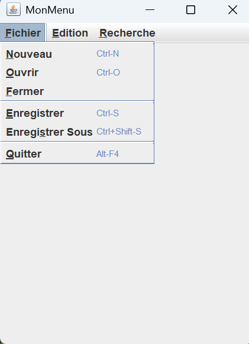

Dans cet exemple, j'ai développé une interface graphique Java qui consiste en une fenêtre contenant une barre de menu.
L’interaction avec ces menus affiche l'action associée dans la console.
Exemple : pour l'entrée du menu ouvrir, on affiche dans la console le mot "ouvrir". Afin de respecter les principes d'ergonomie,
j'ai configuré des raccourcis clavier pour chacun de ces menus tels que "ctrl + S" pour sauvegarder ou "ctrl + O" pour ouvrir.
La barre du menu à été codée dans une classe dédiée pour respecter la modularité et rendre le code plus accessible.
